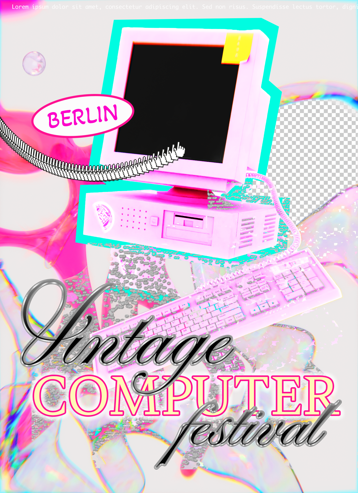
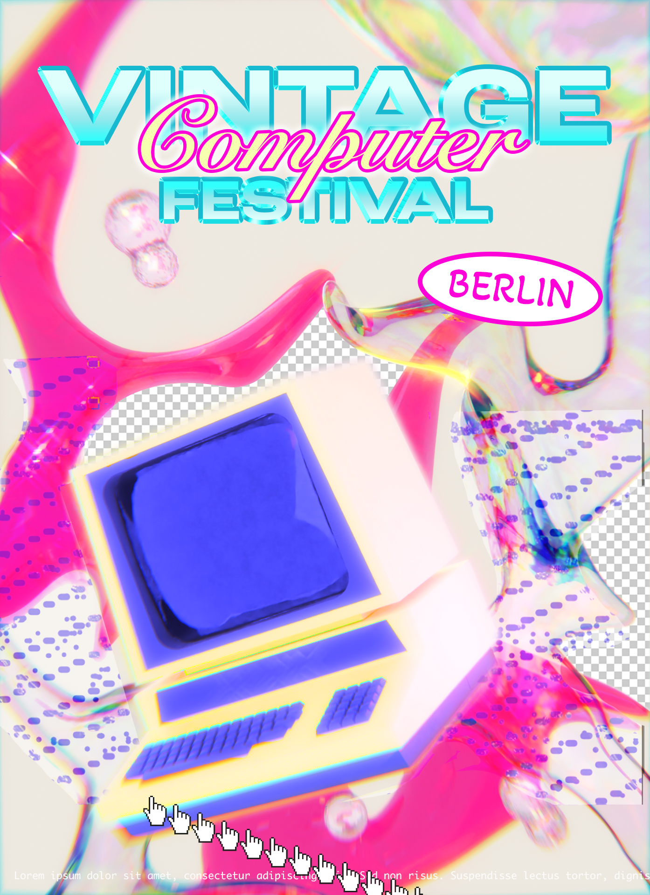
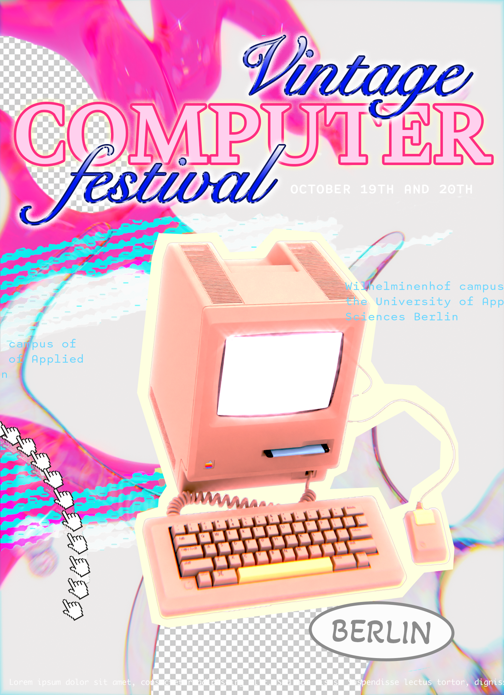

Vintage Computer Festival
Série d’affiches pour le Vintage Computer Festival 2024 à Berlin.
Pour ces affiches promotionnelles, j’ai préconisé
une esthétique, des typographies et des effets dits rétro.
J’ai intentionnellement préservé et introduit des bugs et des glitchs, apparus pendant
le traitement de l’image. Les affiches mêlent 3D et numérique.


